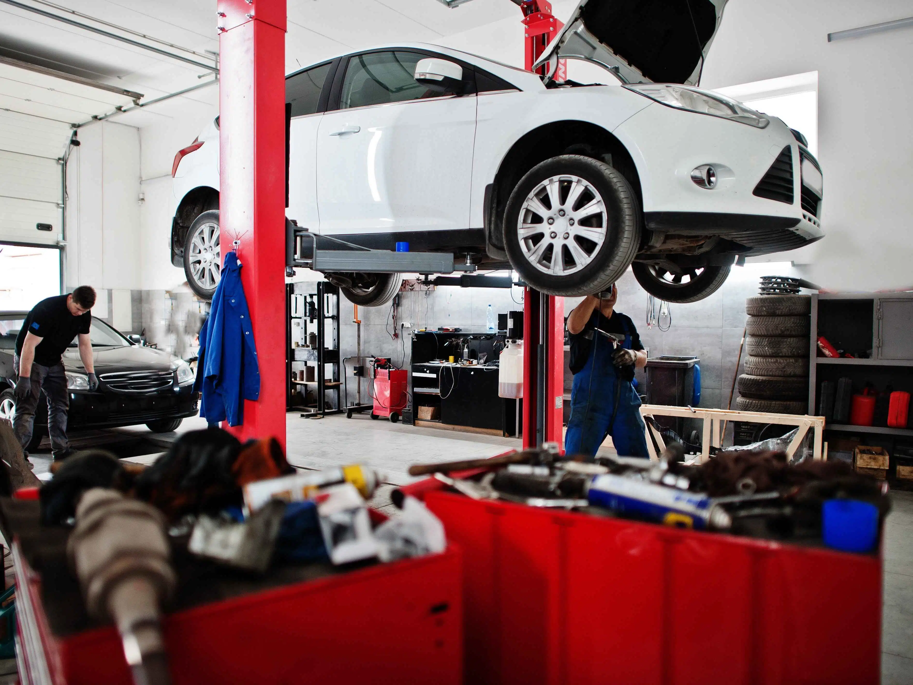
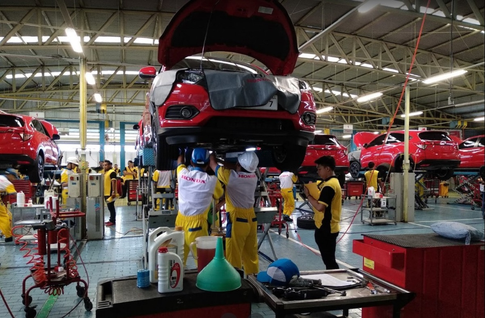
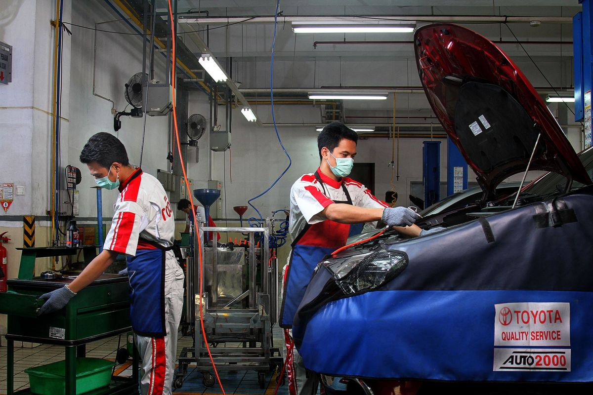
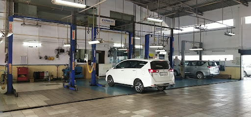

Servis Berkala Mesin
Pemeriksaan menyeluruh, penggantian part aus, dan penyetelan performa mesin.

Bengkel Mobil Semarang
Dari servis berkala sampai perbaikan mendalam, semua dikerjakan oleh teknisi bersertifikat dengan estimasi biaya yang jelas sebelum pengerjaan dimulai.
Layanan Inti
Kami sengaja menampilkan layanan paling relevan agar Anda cepat memilih, tanpa harus menelusuri daftar panjang yang membingungkan.

Pemeriksaan menyeluruh, penggantian part aus, dan penyetelan performa mesin.
Gunakan oli sesuai spek pabrikan dengan proses pengurasan yang bersih.
Deteksi dini bunyi, getaran, atau rem tidak pakem untuk mencegah risiko di jalan.
Pembacaan error code dan rekomendasi tindakan prioritas sesuai kondisi kendaraan.
Kenapa ProAuto
Anda terima ringkasan kondisi dan prioritas perbaikan sebelum kami mulai kerja.
Tim kami terbiasa menangani kendaraan harian, fleet kantor, sampai mobil premium.
Layanan utama memiliki garansi agar Anda lebih tenang setelah servis.
Portfolio
Pemeriksaan awal 32 titik kondisi kendaraan.
Diagnosis bunyi, getaran, dan ketebalan kampas.

Paket perawatan rutin sesuai kilometer.

Area kerja tertata agar proses servis lebih presisi.
Suara Pelanggan
"Servisnya rapi dan komunikatif. Sebelum ganti part selalu dikonfirmasi dulu. Mobil terasa jauh lebih nyaman setelah servis."
"Saya suka karena estimasi biayanya jelas dari awal. Tidak ada biaya dadakan saat pengambilan mobil."
"Waktunya on point, teknisinya detail, dan hasil wheel alignment-nya langsung terasa saat dipakai harian."
Booking
Isi form sekali, lalu tim kami follow up lewat WhatsApp untuk konfirmasi slot servis dan detail kendaraan Anda.
Lokasi
Akses mudah, ruang tunggu nyaman, dan tim siap membantu Anda setiap hari kerja.
Jl. Raya Otomotif No. 123, Jakarta Utara, DKI Jakarta 14250
+62-821-1234-5678
info@proauto.com
Senin - Jumat 08:00 - 18:00, Sabtu 09:00 - 16:00, Minggu Tutup
Kontak